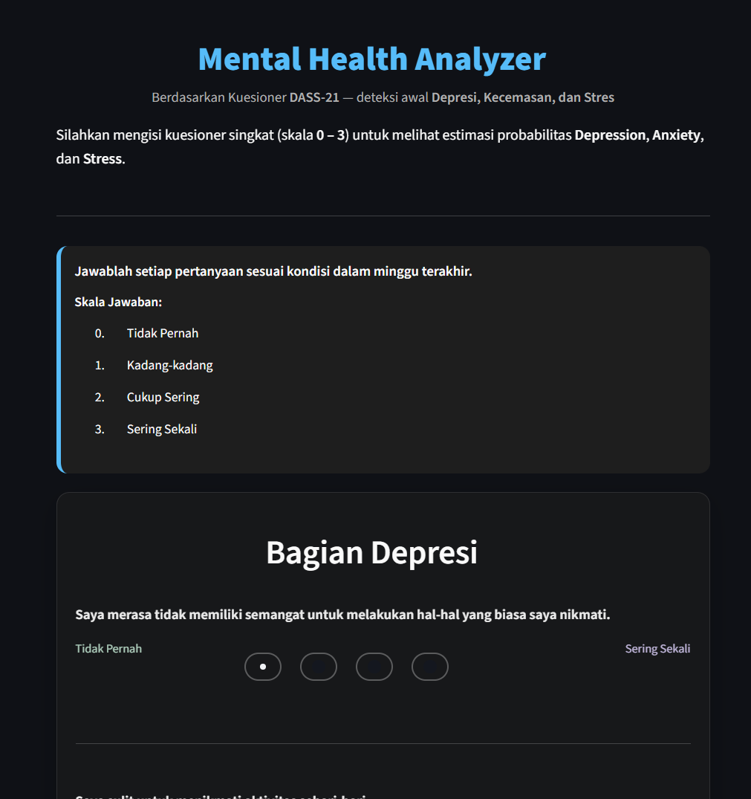

01 / Data analysis · Machine learning
Mental Health Analyzer
Analisis 443 responden DASS-21: pembersihan data, EDA, perbandingan Logistic Regression dan Random Forest, serta evaluasi dengan macro-F1. Model terpilih mencapai akurasi 91–93%.
Python
pandas
Scikit-learn
Lihat studi kasus ↗